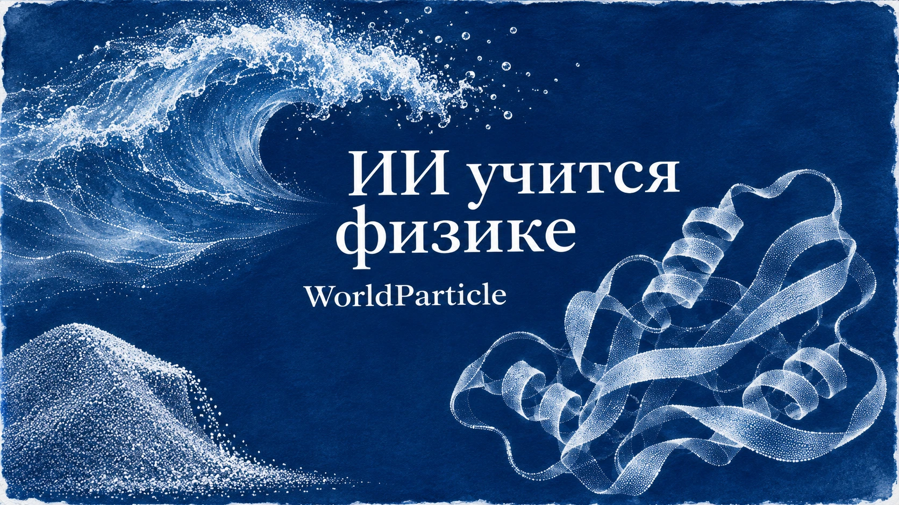

ХПИИ / Тема
Наука и экология
Фундаментальная наука, космос, экология и наблюдение за природой.
2 материалов
← Все темыПубликации

10 ноября 2026 · Новости ИИMIT научил ИИ предсказывать поведение песка, воды и белков
Исследователи MIT и Университета Британской Колумбии представили WorldParticle — общую нейросетевую архитектуру для моделирования шести категорий физических процессов, от песка и жидкостей до молекулярной динамики. Для каждой категории пока обучается отдельная модель.
 9 ноября 2026 · Новости ИИ
9 ноября 2026 · Новости ИИИИ отправили искать инопланетян. Теперь он сам управляет радиотелескопом
SETI Institute и Breakthrough Listen подключили ИИ-агентов к радиотелескопам Allen Telescope Array для управления антеннами и обработки сигналов в ходе наблюдений; NVIDIA заявляет скорость обработки до 2,4 Тбит/с.